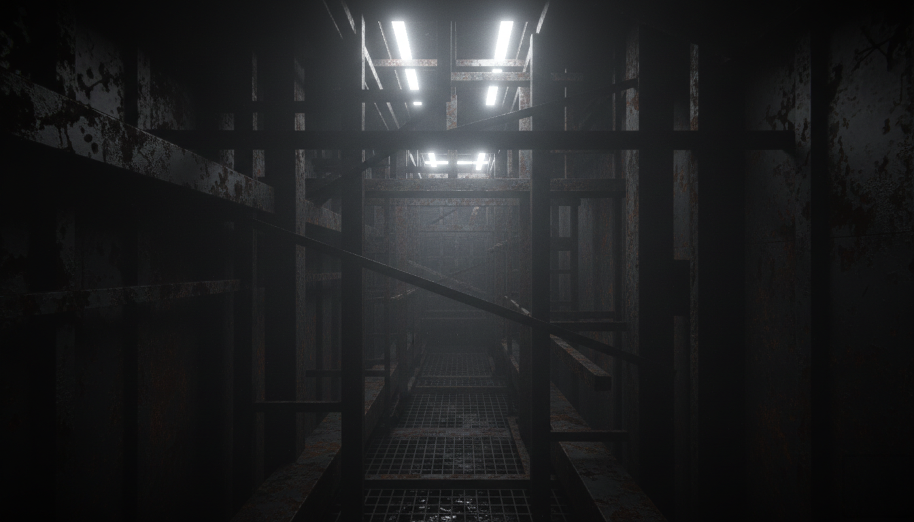
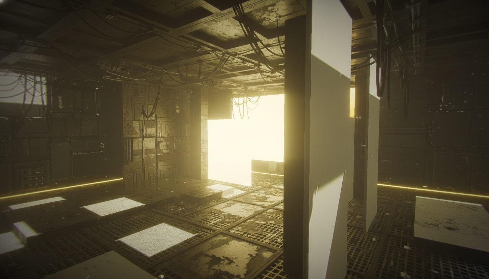
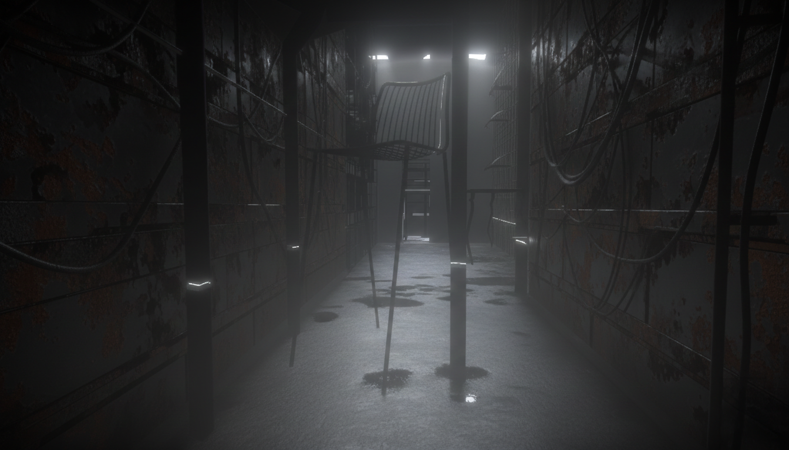
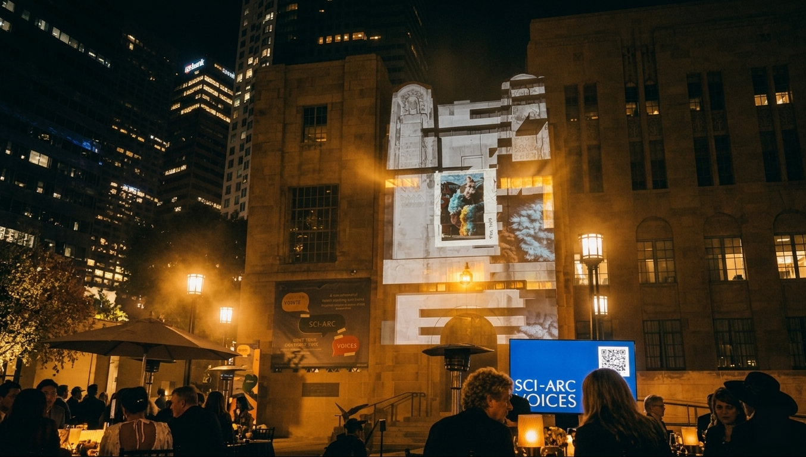

-
VORO
An interactive 3D design system that integrates program, massing and structure into a single early-stage workflow — resolving a brief into a coherent, BIM-ready model in real time.
Computational Design / Generative / Design Tech / Real-Time 3D 2026 -
THRESHLD
WHIPLASH — a wearable ornament that corrects posture by inflating, and the ETFE flagship store that responds to its visitors' posture in turn. Built end-to-end with a generative pipeline (Blender MCP · ComfyUI · LoRA · ControlNet).
Chinatown, Los AngelesGenerative / Product / Flagship Store 2026

-
Orienteering
A remote-island wayfinding project that turns a retired WWII outpost into a five-route sensory journey through Matsu's battlefield landscape.
Matsu, TaiwanLandscape / Wayfinding / Branding / Mapping 2022.jpg)
.png)
.png)
.png)
.png)
.png)
.png)
.png)
-
1 House for All
A net-zero, mass-timber housing prototype that fills the empty gaps of urban renewal with shared, transitional homes — built 1:1.
Taipei, TaiwanHousing / Mass Timber / BIM / 1:1 Build 2022
-
Banqiao Station
A new MRT station entrance, built in practice, where arched canopies stretch a continuous green corridor across the city.
New Taipei City, Taiwan · Professional practicePublic / Transit / Detailing / Practice 2023


-
Earthen
Post-wildfire recovery housing wrapped in a robotically 3D-printed ceramic skin that collects and channels rainwater.
Altadena, Los AngelesHousing / Ceramic 3D Print / Rammed Earth / Climate 2025


-
DreamStudio
A generative-AI design competition that turns collective memory into virtual game-space through Edward Tolman's cognitive-map theory.
Virtual spaceGenerative AI / Cognitive Map / Game Design / Virtual 2022



-
HiYou
AI Icebreaker for Real-World Connections.
AI / Interactive Installation / Computer Vision / Real-Time 2026 -
SCI-Arc Gala
A series of AI-generated videos projected on the garden entrance of the DTLA Public Library, using custom-developed pipelines for the Fall 2025 SCI-Arc Gala.
Downtown Los AngelesFilm / Installation 2025


-
Archive
Some truly random stuff.
Scraps / Film / GIF —